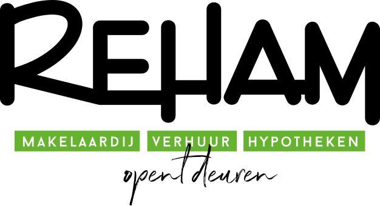

Hieronder vind je de beschikbare voorbeeldpagina's. Klik op een kaart om het voorbeeld te openen. Voeg nieuwe voorbeelden toe door een HTML-bestand in deze map te plaatsen en hier een kaart toe te voegen.

Demo-omgeving — voorbeelden om aan klanten te tonen
Hieronder vind je de beschikbare voorbeeldpagina's. Klik op een kaart om het voorbeeld te openen. Voeg nieuwe voorbeelden toe door een HTML-bestand in deze map te plaatsen en hier een kaart toe te voegen.